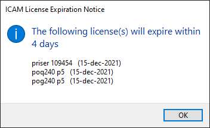
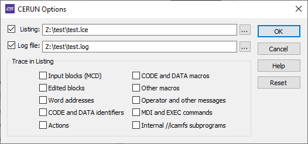
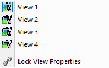
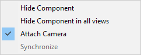
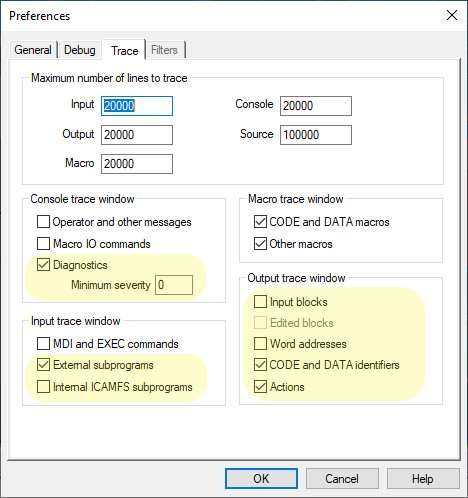

ICAM V24.0 Release
These release notes describe the most significant V24 enhancements and problem corrections.
Some of the enhancements and many of the problem corrections are also available in updated releases of V23 and in some cases V22 as well. If so, the release build number is listed at the end of the enhancement or problem description in [Vvv-yyww] format, where vv is the version, yy is the year and ww is the week (1-52).
We hope you enjoy your new release of the ICAM products and we sincerely welcome your feedback.
The CGTech ICAM R&D Team January 25, 2022
Systems and Packaging
Product Availability
System Manufacturer |
O/S Minimum Requirement |
Microsoft Windows 32-bit** |
8.1, 10, 11 |
Microsoft Windows 64-bit |
8.1, 10, 11, 2012, 2012R2, 2016, 2019, 2022 |
ICAM software is not available for UNIX systems. An ICAM database created with V20 or earlier on a UNIX system is fully compatible with ICAM software running on Windows systems.
ICAM V24 can run under Microsoft Windows 7 and 8, and Microsoft Windows Server 2008R2, but these operating systems are no longer supported by Microsoft.
** V24 is the final version supporting 32-bit architectures. The 32-bit installers are available with V24 on demand only. Contact support@icam.com should you require a 32-bit installation. Note that there is no performance benefit to using 32-bit, but there is a disadvantage with 32-bit of having less available memory for a running process.
Licensing
When used with floating licenses, the ICAM License Manager (ICAMLM) now has the ability to list and manage the client computers that are entitled to check out licenses. For example, a 1/5 license permits up to 5 different computers to share 1 concurrent use of the license. Once 5 different computers have used the license, further requests from any computer not on that list will be refused. The ICAMLM now provides the ability to remove client computers from the list, freeing up the space for other computers. Client computers that are removed from the list are refused access for a period of 48 hours. A password can be set to restrict the ability to remove client computers.
{kind=link}
ICAM can now host your floating licenses on a cloud server. With cloud licensing, you can run ICAM software from home, at work, or anywhere there is an Internet connection. ICAM maintains both the server and your licenses. The ICAM.KEY file on the client computer contains the information as usual that identifies the cloud server URL and port, with an additional unique identifier for security purposes.
005 35.238.180.21:6700 632ef8b8-675a-404b-81b0-53e633f246ff
Cloud licenses are identical to floating licenses, with the advantage that they can be accessed from anywhere. Client computer count limitations are still in effect, and these can be managed from the ICAM License Manager (ICAMLM) from any computer where ICAM software is installed.
A message box will now appear notifying of soon-to-expire licenses. This message box will appear once when reaching 30 days from expiry, once again when 15 days from expiry, and once each day during the last week before expiry.
The icamflm.key floating license key-file has been renamed icamls.key, to better reflect the fact that this key-file is used by the ICAM License Server (ICAMLS). The key-file contents have been encrypted for better protection against tampering, but still include the original plaintext description of the key-file contents for readability purposes.
{kind=link}
The old floating license key-file previously resided in the Program Files license server installation directory, but it is now located in the ProgramData\ICAM\Server directory. This will make key-file updates easier since Program Data is generally writable while Program Files is not.
To simplify upgrading, the version number has been removed from the License Server installation and data directory names. The same version numbering is used for the licensing installation software as for the main product (i.e., 240).
The ICAM License Server icamls.log file is now located in the ProgramData\ICAM\Server directory instead of the Program Files license server installation directory.
The ICAM License Manager (ICAMLM) and ICAMID Utility Network Test functionality now use TCP communication to access the ICAM License Server. Previously they used UDP communication, which when used outside of a local area network (LAN) generally required routing rules to be added to network equipment.
Note that ICMP is still used by the ICAMID Utility Network Test and the License Server license checkout functions. ICMP must be enabled on the client computer in order for the network hop count to be checked. ICMP is not required for cloud licensing.
V24 license check-out has been sped up considerably, which is especially noticeable with multi-hop licenses.
Configuration
The Config utility has been simplified to remove the Open, Save In, Save As and Save buttons. These were used in V23 and older versions to open configuration files from various locations and then to save them to the same or different locations. This caused confusion since these changes would have no effect if the ICAM.DEF file being saved was not the one actually in use.
{kind=link}
The Config utility now simply shows the path and name of the ICAM.DEF configuration file that was found (or that will be created) by the Config utility, and by extension, all other ICAM software. Selecting OK saves any changes and exits; selecting Cancel ignores changes and exits.
Productivity Tools
ICAM Portal
A new portal application has been added as a global hub used to manage all things ICAM related. When closed, the portal remains active in the Windows tray bar area. The following sections are available from within the portal:
The Home page shows the latest news from ICAM. This page requires Internet access. |
|
|---|---|
The Products page provides quick access to start the Quest, Gener, CeRun and PSE products. It also lists the product options that you have licenses for as well as for those that you do not. Links to the ICAM website provide more information about what each license option does. |
|
The Tools page gives you quick access to check for updates and to launch ICAM installed utilities, such as the Configuration utility (that manages the ICAM.DEF file), the CAM Integration utility (that interfaces ICAM to the CAM systems installed on the computer), the ICAM License Manager (ICAMLM) and ICAMID utilities. |
|
The Documents page provides links to product User Guides, Help files, and other documentation that have been installed locally with the ICAM software. These do not require an Internet connection. |
|
The Job Progress page provides a central location to track running and completed Gener and CeRun jobs. This page shows a progress status bar for jobs that are running, and completion status information for jobs that have ended. Links provide quick access to re-run completed jobs. When the Portal is not running, job progress icons will appear in the task-bar as usual. |
|
The Licenses page lists all licenses that are available to you with a short description of each. The license end date is also listed for leased and non-permanent (i.e., temporary) licenses. |
|
The Learn page provides access to educational information on the icam.com website. This includes Tech Tips (short articles addressing various technical topics), video tutorials that graphically demonstrate various functionality, FAQs, and Support contact links. This page will evolve over time. |
Quest Developer’s
The questionnaire has been enhanced with new and modified questions, as follows.
The General Description / General Information section question #70 “Primary machine unit system” now takes its default response from the ICAM.DEF definition file UNITS symbol. [V23.0‑1930]
The General Description / General Information section has a new question #6.7 “Update WCS position from VM simulation [Yes,No]” that is asked for control emulators only. When answered “Yes” (the default for new CE’s), the CeRun motion kernel will be updated with the current Virtual Machine coordinates each time there is a change in compensation. This is particularly important for programs using G91 incremental motions. CE’s created with older versions will have a “No” response for this question, to maintain compatibility. ICAM recommends this question be answered “Yes”.
The Machine Description / Register section now also lists the usage for disabled registers. Previously, disabling a register would cause the Uses column to be empty, giving the false impression that the register was both disabled and unused.
The right-mouse context menu when selecting a single register in the register table now includes new “Go to” menu selections listing each of the uses of that register. Choosing a usage causes Quest to jump directly to the questionnaire section and question that defined that particular use of the register.
The Control Description / Coordinate System section question #37 “LCS enables RTCP” has a new “Convert” option that can be specified for machines with rotary tables.
The Control Description / Coordinate System section also has a new question #49.6 “Rotation angle convention” that provides control over how LCS command rotation angles are output to the MCD.
The Control Description / Coordinate System section has three new questions #94, #94.1 and #94.2 that define the default LCS/AUTO format to use if not explicitly given in the LCS command or via the $LCAMOD variable. [V23.0‑1903]
Two additional questions #94.3 and #94.4 define how the UW axes of the automatic LCS frame should be oriented, and if the automatic LCS should include a translation component. These settings can also be controlled in Gener using $LCAUTO and $LCAUTOT macro variables.
The Control Description / Tool and Fixture Compensation section has new tool length compensation questions that can be used to support G43.4 and G43.5 codes on a Fanuc controller, or on any CNC where length compensation is a form of RTCP. Not counting basic G43 length compensation, up to three additional tool compensation codes can be supported. For each code, Quest asks:
The (G) code that activates the tool compensation (e.g., 43.4, 43.5, 43.1…)
The RTCP setting that is used by the CNC when this code is active. Up to two different RTCP settings can now be defined (see Advanced 5D Machining below).
The RTCP rotary axis control format (e.g., Rotary axes, Vectors, Euler…)
The compensation type can be specified in Gener using a new TLVEC,# parameter on the CUTCOM/ON,LENGTH command, or via a new $TCLSET macro variable.
The Control Description / Tool and Fixture Compensation section has a new diameter compensation question #262 “Behavior at start and end” that describes the entry and exit compensation choices that are known to be available. The response to this question is used by Virtual Machine to more accurately simulate compensated tool paths.
The Control Description / Tool and Fixture Compensation section question #360 “Rotary table continuous fixture compensation” has a new “RTCP” response, that supports machines that continuously adjust the coordinates when the table rotates, but only when RTCP is active.
The Control Description / Tool and Fixture Compensation section also has a new fixture compensation question #370 “Rotary table dynamic fixture compensation” that supports non-modal adjustment of the fixture compensation based on the current rotary table position, such as can be found with the G254/G255 codes on a HAAS CNC. This form of compensation is used for rotary positioning only. Additional questions ask for the enable and disable (G) codes. This functionality is controlled in Gener using a new CUTCOM/TABLE,ON-OFF command, and can also be controlled from Gener and CeRun using a new $DYNFIX macro variable.
The Control Description / Advanced 5D Machining section has a new question #100.05 “Number of RTCP settings” that enables multiple RTCP settings to be defined. For this release, possible choices are 1 (the default) or 2. On a Siemens CNC for example, this could be used to define separate TRAORI(1) and TRAORI(2) functionality. On a Fanuc CNC this could be used to define the RTCP behavior of the G43.4 and G43.5 tool length compensation codes. For each setting, Quest asks:
The (G) code that activates the RTCP setting
The RTCP interpolation and positioning strategies (e.g., NA, TTO, Thru…)
If the CNC compensates for the part position due to table rotation
If the CNC also compensates for the part orientation due to table rotation
The RTCP type can be specified in Gener using a new # parameter on the MODE/TLVEC command, or via a new $TCPSET macro variable.
The Optional PP Words / CALSUB section has a new question #4.1 “Subprogram file extension name” that defines the tape file extension for subprograms that are written to separate files (the default is “.tps”). A read/write $SUBEXT system variable provides macro access to the same information.
The Optional PP Words / SEQNO section now always asks question #5 “Minimum value” regardless of the Register section “Use default resolution/minimum/maximum values” check-box setting. This allows sequence numbers to start at zero or negative values. [V23.0‑1928]
The Customization section has been enhanced for post-processor development as follows:
The Startup/Shutdown Procedures RMD (Rapid Macro Development) editor has a new “Convert to Custom macro” icon on the icon bar (see below), which can be used to change selected built-in RMD actions in the Macro list to a “Custom macro” type so that the macro code of the RMD action can be edited.
{kind=link}
The LCS Startup macro now includes a new “SIEMENS CYCLE800” RMD action, which outputs a CYCLE800 subprogram call instead of combinations of TRANS and ROT commands. This RMD macro prompts for the rotary axis, if any, that affects the “DIR” parameter of the cycle. If a rotary axis is specified, the sign of that axis will be used for the DIR parameter and Gener will assume that the CYCLE800 causes the rotary axes to position.
The Cycle Startup macro "SIEMENS drilling cycles" RMD action was using MCALL modal cycles only when there were two or more consecutive points in the cycle block; it now uses the MCALL format regardless of the number of points. If required, set $IAGCYC(12)=n to specify the minimum number of consecutive points “n” required to use the modal MCALL format.
Setting $P1=–2 in a Cycle Startup macro will only perform the feed rate processing portion of the cycle output when OUTPUT is next called. This can be used to force feed information out in a block separate from other cycle output. [V23.0‑1904]
%L01=$P1$P1=-2OUTPUT $$ feed rate output here…$P1=%L01OUTPUT $$ remainder of cycle output here
The “Display current mach. time” RMD action was updated to use time output format codes in the DISPLY command. Previously, formulas in the RMD macros were used to convert the time value to hours, minutes and seconds. Also, the “Set internal axis position” RMD action now uses the MOVETO/MANUAL command instead of CLAMP/MANUAL,OFF. The result is the same, but MOVETO is the preferred way of moving axes. These changes only affect new instances of these RMD actions; current post-processors are not affected.
The Register Macro now includes a new $P5 variable that identifies the CODE or DATA identifier of the register being formatted, and the $REGMATCH system variable now supports CODE and DATA identifiers. This provides fine-tuned control over when the Register macro is called, and simplifies the coding of register macros since it is now possible to differentiate between different functions that share the same register.
Other Quest enhancements:
When restarting Quest with the previously saved environment restored, the most recent revision of the post-processors, control emulators and models will be loaded into memory, regardless of what actual revisions were being edited the last time Quest was run. This will prevent mistakenly working on older revisions. [V23.0‑2005]
Dragging and dropping a packaged job (.zpj) file onto a running Quest application will temporarily add the packaged job databases to the Database navigator window. They will remain there for the current Quest session only. [V23.0‑1933]
The Quest Tools»Finder… utility (ctrl+shift+f) now has a “Macro comments” check-box that when cleared will inhibit the searching of text in macro comments.
The Quest Tools»Calculator… has been enhanced to use the regular keyboard functions in addition to those of the numeric keypad.
The Quest application title bar now shows the product version and mod level. The Help»About Quest… menu now shows the version, mod level and build number. The build number helps Support technicians identify the exact release you are running, which can be helpful when resolving technical issues.
A new Help»Documentation… menu opens Windows File Explorer showing all ICAM documentation installed with the V24 release. These are in a “documentation” sub-folder of the V24 installation.
The Quest application status bar shows the interface kit that is being used for Major and Minor word definitions in the macro processor. Clicking on the current kit name will open a selection window listing all available interface kits. Selecting a kit from the list will use that kit’s Major/Minor words for macro processing. The kit selection is remembered from one run of Quest to the next. This does not affect the default kit selection in the launch panel.
Gener Post-processing
Adaptive post-processing permits the NC programmer to concentrate solely on cutting tool-paths, leaving the connecting positioning tool-paths to be automatically generated by SmartPATH; long entry, exit and non-cutting feed motions to be minimized by SmartCUT; and cutting feed rates to be optimized by SmartFEED. These three modules are collectively known as SmartPACK. They have been continually improved and fine-tuned.
SmartPATH by default recalculates positioning motions above the cycle CLEAR (i.e., entry clearance) plane. A new SMARTP/CYCLE,CLEAR-RETURN command can be specified to tell SmartPATH to recalculate positioning motions either above the CLEAR or the RETURN (i.e., exit clearance) planes. [V22.0‑1918, V23.0‑1918]
SmartPATH now recognizes when angled tool holders are in use and applies the retract safety as much as possible along the angled tool direction instead of along the spindle axis direction. This produces much better results when working in recessed cavities with angled tool holders. [V23.0‑1944]
SmartPATH now does additional testing when connecting the end of one operation to the start of the next, in an attempt to find a linking motion with better “squareness”. The new operation linking motions have the same or better time cost, and with greater visual appeal to the machine operator.
Post-processor commands have been enhanced to provide new functionality as follows:
A new ADAPTV/NORMAL command modal option can be used to enable Virtual Machine simulation during normal processing, while automatically disabling it during $FLOOK and $FINFO look-ahead processing. This will speed up look-ahead processing when running adaptive post-processing. [V23.0‑1929]
The CUTCOM/ON,LENGTH command has a new “RTCP,n” option to specify the length compensation mode n to use on machines with multiple tool compensation settings. A new diagnostic #1302068 is output if the selected mode is not available.
A new CUTCOM/TABLE,ON-OFF command is available to enable and disable rotary table dynamic fixture compensation. This is a form of rotary table workpiece compensation used for 5-axis positioning only. It can also be controlled from Gener and CeRun using a new $DYNFIX macro variable. A new diagnostic #1302069 is output when attempting to activate this feature on a machine that does not support it.
CYCLE/DEEP and CYCLE/BRKCHP now support a new “MINSTP,value” couplet that defines the minimum cycle step distance ($CYMIN variable) for a constantly decreasing deep or chip breaking cycle. [V23.0‑1944]
To simplify the LIMIT command syntax, LIMIT/RANGE and LIMIT/ORIENT should now be used in place of “LIMIT/ORIENT,ABSOL” and “LIMIT/ORIENT,INCR”. The old syntax will continue to work, but it will not be documented. [V23.0‑1947]
The LINTOL command has been modified to support the use of a new RTCP minor keyword in place of TLVEC. The TLVEC keyword will continue to be supported, but not documented.
The MCHTOL command has a new “OPTION,3,eaccel,toler” setting that specifies HSM acceleration as a fraction of Earth acceleration. This can be used as an alternative to the “OPTION,1,feed,time,toler” acceleration setting. [V22.0‑1908, V23.0‑1908]
The MODE command has been enhanced as follows:
RTCP control now uses MODE/RTCP instead of MODE/TLVEC. The TLVEC keyword will continue to be supported, but not documented.
For machines with multiple RTCP settings, the setting number n is specified using the “RTCP,n” option. A new diagnostic #1372007 is output if the selected mode is not available.
For 6-axis shared linear axis processing, the MODE/EXPAND,PROTCT distance calculations now take the LIMIT/LENGTH and LIMIT/ADJUST settings into account. Having Gener account for the expected tool length and fixture compensation amounts when testing for shared axis travel results in a more optimal solution. [V23.0‑1938]
The ORIGIN command matrix syntax has been enhanced to define a center of rotation via a new “AT,xc,yc[,zc]” option, as well as to define a translation with respect to the as-rotated frame via a new “TRANS,x2,y2[,z2]” option.
{kind=link}
The same functionality applies to the INDEX, LCS, LIMIT, MSYS, and PLOT commands, as well as to the $FMX macro function.
The SAFETY motion splitting command has been enhanced to control where, in a multi-block split motion, codes for RTCP, LCS and length compensation are to be output. These functions can be combined with individual axes motions or output alone on a block.
“RTCP,#-ON-OFF” defines where RTCP is to be changed
“LCS,ON-OFF” defines where LCS is to be changed
“LENGTH,#-ON-OFF” defines where tool length comp is to be changed
The keyword REV can be used as a substitute for all active rotary axes. The keyword LINEAR can be used as a substitute for all active linear axes. The keyword ALL can be used to output all active axes. Follow any individual or axis group keyword with NOW to output the current (i.e., before split) position of the axes instead of the target position.
The entire split motion block is output using the current FEDRAT or RAPID in effect. This can be changed on an individual split motion basis by adding RAPID or “FEED,value[,units]” to force a positioning velocity.
The SPINDL command has been enhanced as follows:
To simplify programming, either “MAXRPM,0” or “MAXRPM,OFF”.can now be used to remove the CSS maximum spindle speed limitation. [V23.0‑2036]
To simplify CSS emulation “STEP,0” and STEP,OFF can both be used to disable constant surface speed emulation. “INCR,Δrpm” can be used as an alternative to “STEP,n”, to define CSS emulation in terms of change in RPM instead of gear range subdivisions. [V23.0‑2036]
The THREAD command has been enhanced as follows:
To simplify programming, either “ATANGL,0,0” or “CHAMFR,0,0” can be specified to indicate that a chamfer is not required. [V23.0‑1905]
A new “MINSTP,value” couplet defines the minimum threading step distance ($THMIN variable) for a thread where the step distance is based on constant cross section of cut. [V23.0‑1944]
Other Gener enhancements:
3D tool compensation (i.e., CUTCOM/NORMAL command) is now available for 3-axis milling machines. Previously, this was only available for milling machines with at least one rotary axis. [V22.0‑1918, V23.0‑1918]
When Control Description / Tool and Fixture Compensation section question #251 “Can diameter comp. be applied with RAPID positioning” is answered “No”, new warning diagnostics #01302070 and #01302071 are now output when Gener converts positioning motions to high feed at the start and end of a diameter compensated tool path. [V23.0‑2150]
Linearization (i.e., LINTOL command) processing now detects when the specified linearization tolerance is too fine to be supported on the machine. A new warning diagnostic #1426009 lists both the requested and actual tolerance values.
Linearization cannot be applied if the distance between the rotary pivot and the tool tip is zero. This condition is now signaled with a new warning diagnostic #1426010. The problem can be solved by including the head rotary pivot amounts in the post-processor definition and/or by defining a tool length via the LINTOL/LENGTH command. [V22.0‑1925, V23.0‑1925]
Gener now outputs diagnostic #1429001 when a pending deferred coolant activation is replaced with a different type. There is no change in tape output; just a warning to indicate why the original deferred coolant code was not output. [V23.0‑2106]
The number of unique subprograms that can be defined in a program (i.e., DEFSUB command) has been increased from 200 to 500. [V22.0‑1948, V23.0‑1948]
The number of operations that can be tracked in a program (i.e., OPTYPE command) has been increased from 500 to 999.
The Gener listing file is now optional. If a listing is not generated, then a log file (.log) will created instead. The log file includes diagnostics and summary information, but does not include the MCD or any trace information.
CeRun Control Emulation
The CeRun launch panel Options have been enhanced to provide increased control over the types of information that are output to the listing file.
The listing file now always includes a trace of the main program and subprogram MCD (tracing of subprograms that reside in the internal //icamfs space is optional). This enables diagnostic messages to be seen in context.
The listing file is now optional. If a listing is not generated, then a log file (.log) will created instead. The log file includes diagnostics and summary information, but does not include any trace information.
A control-out code in the MCD now generates a code_comment instruction and sets the $TPRINT variable to the comment text. An operator message in the MCD now generates a code_disply instruction and sets the $DISPLY variable to the message text. This enables the content of comments and messages to be processed (if necessary) using code macros rather than by using string processing in block startup or pre-processor startup macros. [V23.0‑1915]
Questionnaire responses to the Machine Description / Rotary Axes section questions #n11.10 “Sign indicates direction” and #n11.20 “Control uses shortest path” are now taken into account when computing the motion of rotary axes. [V23.0‑1924]
Questionnaire responses to the Machine Description / Rotary Axes section question #860 “Spindle face frame orientation” are now taken into account during RTCP processing when the tool orientation is controlled using virtual axes registers (e.g., IJK, Euler…).
Questionnaire responses to the Control Description / Tool and Fixture Compensation section question #251 “Can diameter comp. be applied with RAPID positioning” and question #252 “Can diameter comp. be applied with circular interpolation” are now taken into account and will result in the following new error diagnostics: [V23.0‑2150]
{kind=link}
0201 8003 |
On this machine diameter compensation cannot be established during a positioning motion. |
|---|---|
0 2018004 |
…cannot be deactivated during a positioning motion. |
0 2018005 |
…cannot be established when starting a circular motion. |
0 2018006 |
…cannot be deactivated during a circular motion. |
Other CeRun enhancements:
Inverse time feedrate control (e.g., G93) is now supported. [V22.0‑2050, V23.0‑2021]
The number of operations that can be tracked in a program (i.e., tool and $OPNAME changes) has been increased from 500 to 999.
Heidenhain pre-processor:
The $MCD variable now includes the complete multi-line MCD block when processing line continuation markers in conversational MCD. The concatenated blocks are also now shown in the Input trace window. [V23.0‑1914]
Siemens pre-processor:
The $FCEPP('PROCESSGUDFILES'…) function will now process CHAN variable definitions as global variables since this call is meant to process GUD files which are called at the root level. This is how the Siemens controller operates, setting the CHAN variable scope as global when defined at the root level and as local when defined from subprograms.
To assist the CE developer, a diagnostic message is now output when a file specified with the $FCEPP('PROCESSGUDFILES'…) function is not found.
Memory usage and performance has been greatly improved with Siemens controller variable arrays, which can have up to 3 dimensions with each having up to 65536 elements (840Dsl limit).
Non CE defined axes will now be recognized once they are defined with any of the following Siemens system variables:
$MN_AXCONF_MACHAX_NAME_TAB
$MC_AXCONF_CHANAX_NAME_TAB
$MN_AXCONF_LOGIC_MACHAX_TAB
$MC_AXCONF_GEOAX_NAME_TAB
The SPI() and AXTOSPI() functions are now supported, which are used to convert between a REAL spindle value and an AXIS identifier. [V23.0‑2018]
The APR, APW, APRP, APWP, APRB, APWB instructions are now ignored as the CE does not care about permissions for simulation purposes. [V23.0‑1935]
The RDEF instruction will no longer diagnose an error when the variable being redefined has not already been defined. REDEF is used to change permissions and other attributes, which as mentioned above are not used by the CE. [V23.0‑1935]
Corrections:
Hexadecimal and binary constant values would not be assigned if set on a DEF line.
Fixed exponential notation of floating numbers.
Fixed DEFINE macros where a comment at the end of the block was not processed properly.
Fixed $P_IFRAME which was not correctly requesting workpiece compensation values from Virtual Machine.
Fixed $P_IFRAME which was not supporting extracting a frame component from the variable and could cause a crash.
Okuma pre-processor:
A new $FCEPP('PROCESS','SUBPROGRAMS'…) function can be used to enable or disable pre-processor handling of Okuma subprograms.
Virtual Machine
Virtual Machine (VM) now supports up to 4 simulation windows that can each be independently docked or floated as required. These windows can be individually toggled from the Simulation»Virtual Machine menu (shown at right). The visibility of the simulation windows can also be toggled from the View toolbar. When Lock View Properties is set, property changes to one window are applied to all; otherwise properties of each window can be individually controlled. A faint green border indicates the simulation window that currently has the focus.
The Tools/Holders/Heads dialog (Ctrl-Alt-T) has been redesigned.
{kind=link}
{kind=link}
The left side of the dialog lists the tools, holders and heads in tabular format. The center section of the dialog provides controls to modify the tools and holders. The right side of the dialog has construction and 3D previews of the tools and holders, which are dynamically updated to reflect changes as they are made. Changed tools and holders are listed in red until the changes are committed via an Apply button.
The following enhancements have been made with respect to tools and holders:
Profile milling tools now support the “Body offset (o)” parameter, which offsets the non-cutting profiles of the profile tool by the specified amount. Use this to eliminate collisions when the non-cutting portion of the tool touches the part.
VM now uses the internal gouge tool for tool vs. part collisions during rapid motions along the tool axis (i.e., retract or plunge), and also when the tool is momentary not moving (e.g., when stopping the spindle or during a dwell). This enhancement eliminates collisions that could be reported when retracting the tool, or during bore and other cycles that stop the spindle or that dwell at full depth. [V23.0‑2017]
Holders now have a new “Act as a head” property. When this is selected, VM will ignore the offset between spindle control point (SPC) and tool control point (TCP) when calculating the expected tool length compensation offset for any tool using that holder. This setting should be used when the CNC (or model macros) already compensate for the offset between SCP and TCP.
Attaching the camera to an object is now easier. Select the object in a simulation window and select Attach Camera from right-mouse pop-up context menu. This menu will show a checkbox if the camera is currently attached to anything; right-mouse in the background and once again select Attach Camera to detach it.
{kind=link}
The pop-up context menu also includes functions to hide the selected object in the current simulation window (i.e., the one with the faint green border), or in all simulation windows.
The Simulation»Camera»Fit, Center and Pivot functions now apply only to objects that are both selected and visible. When no objects are selected, these functions apply only to visible objects. This makes it much easier to bring into view objects of interest.
The Simulation»Options»Misc dialog has a new Antialiasing drop-down that lists the settings available with the workstation’s graphic card. The chosen setting is kept in the registry and used on subsequent runs (i.e., you must restart to see the effect of antialiasing setting changes). This setting overrides any general Windows Display property settings. Any effect on drawing performance can be checked by enabling the FPS setting in the HUD.
For robot models, the Controller»Axes tab includes new Shoulder, Elbow and Wrist controls that can be used to test out different possible robot configurations for collision avoidance and reachability purposes.
{kind=link}
These controls are available for known robots only. Send ICAM’s Support department your robot model in “dmp” format to have it enabled for configuration testing. The various Right/Left, Down/Up and Front/Rear controls retain the tool tip position and tool orientation, but change selected robot joints to choose between the possible solutions (there are 8 in total).
We continue to work on ways to reduce loading times and speed processing of jobs:
Various improvements have been done to shorten the loading and restart times of jobs. The Loading dialog lists the time spent loading and initializing various components of the simulation, which helps identify those steps that are taking time. Use the new View»Loading Sequence menu selection after loading has completed, to recall the Loading dialog to see where excess time was spent.
For material removal simulation (MRS) the in-process stock, machinable fixture components and tooling must all be “water tight” meshes. That means no cracks, and no inverted or missing faces. The process of finding and correcting these problems is called “healing” and this is done during the loading process. This can take significant time for very large meshes or those with poor quality. The healed copies of these components are now cached in a binary format, which shortens the time to load them on subsequent runs. We also now delay healing of components until when they are needed.
In-process stock is now saved in binary STL format by default when ending a process, which saves a little time on the save operation and a significant amount of time when reloading it into the next process.
The Simulation»Options»MRS dialog no longer includes the material removal simulation multi-core optimization option, since this has now been enabled permanently. This optimization works best when in Progress or Background modes, or when in Full mode with animation control set to multiple Steps or a large Time Interval.
The Simulation»Compare function now uses as many CPU cores as possible when comparing the in-process stock against the corresponding design part. [V23.0‑1935]
The computation of the intersection curve between colliding elements has been optimized. This noticeably speeds the manipulating of TimeLine past long sections with continuous collisions. [V23.0‑2128]
The $FMSPIC macro function processing has been improved, which significantly shortens the time it takes to generate an image from a simulation window. Calling this function should no longer affect window focus in other applications. [V23.0‑2141]
For Additive Hybrid machining…
VM now diagnoses (#1700301) when attempting to start additive machining while the spindle is turning, or (#1700302) when starting the spindle while additive machining is active, or (#1700303) when attempting to start additive machining with a non-additive tool type loaded.
A Generic additive tool type is now available, allowing definition of the additive deposition area as an STL mesh.
Other Virtual Machine enhancements:
The HUD width now adjusts to be only as wide as necessary to show the current operation and/or tool name. [V22.0‑2150, V23.0‑2150]
The Measurement functions now permit the selection of the tool and workpiece reference markers.
Gener & CeRun Run-Time
Clicking with the right-mouse button in any of the run-time trace windows and selecting Options… will activate the Tools»Preferences»Trace dialog. Additional trace options have been added to provide more control over the types of information that are traced.
{kind=link}
The Console trace now provides control over the display of diagnostic messages.
The CeRun Input trace now more clearly defines the types of sub-programs to be traced (if at all).
The CeRun Output trace previously organized the output into two categories: “Input and edited blocks” and “Tokens and Actions”. Output tracing is now organized into five categories, to provide more control over the types of information shown, which can reduce the amount of information traced (and thereby speed processing).
Clicking with the right-mouse button in the Source window and selecting Options… will activate the Tools»Preferences»Debug dialog.
A new Help»Documentation… menu selection opens the Windows File Explorer showing all ICAM documentation installed with the V24 release. These are in a “documentation” sub-folder of the V24 installation.
A new View»Loading Sequence menu selection recalls the Loading dialog for review.
INSERT, DISPLY and TPRINT command text is now identified as such in the Gener Output window tool-tip trace. [V23.0‑1910]
The Diagnostic window now has a new "Operation" column identifying the operation name in effect when the diagnostic was issued. [V23.0‑1904]
We continue to work on ways to speed processing of jobs, especially when running with the “Full” interface. These enhancements were introduced to V23 when developed, so you will only see the benefit if your current release is older than the version mod-level listed:
Status bar updates have been optimized to eliminate flickering, and to reduce the CPU time needed for each update. This improvement makes a significant difference when in Full mode. [V23.0‑1948]
Input, Output, Macro and Console trace window processing was redesigned to allow text to be drawn quicker, cutting down the wait time needed to update these windows. [V23.0‑1944]
The Variable Watch window processing previously updated all variables in all tabs on each debugging step. This caused a noticeable delay when single stepping with a post-processor or control emulator having a lot of variables. We now only update those variables that are immediately visible in the watch window, resulting in no noticeable delays. Variables are dynamically updated as you scroll through the various tabs. [V23.0‑2027]
Integration Tools
Manufacturing Extractors and the CAM Integration utility have been updated to support the following CAM systems and releases:
3DEXPERIENCE 2015x–2021x
CATIA V5R21, V5-6R2012–2021
Creo1–7
FeatureCAM 2017–2021
Fusion 360
Mastercam 2017–2022, and for SolidWorks 2014–2019
NX8–12, NX1847–1980
PowerMill 2017–2021
The Manufacturing Extractors are continuously updated, which is why ICAM provides an Integration Tools installer separate from the Productivity Tools (i.e., main products) installer. There are far too many minor enhancements to list here, but the following are some more significant enhancements that may be of interest:
Enhanced 3DEXPERIENCE extractor that is based on an API (application programming interface) supplied by Dassault Systèmes. [V23.0‑1947]
New Preference section “Simplify tool profile” option applies the tool faceting tolerance to the CAM system generated profile. This results in a tool shape having the minimum possible number of faces, which speeds material removal simulation. [V23.0‑1950]
A new “Save As” button at the top of the interface saves the extractor settings for the current process in the form of a template, which can later be reloaded into a different process using the new “Template” button also at the top of the interface. The extractor uses name matching to apply the old template to the current process. This can be used for example to easy configure multiple-setup processes, or to quickly assign tools to various model tool-pocket axes. [V23.0‑2003]
New Preference section “Merge non-machinable fixtures as a single object” option that combines CAM system individual fixture components into a single STL mesh instead of generating one mesh for each component. This reduces program complexity and can speed processing. [V23.0‑2005]
The CATIA, 3DEXPERIENCE, CREO and NX extractors now recognize CAM diameter compensation tool-paths as originating at the tool center or the tool edge, and they adjust the VM diameter compensation value accordingly. [V23.0‑1948]
Fixture compensation offsets are now shown with each work coordinate system listed, and can be easily modified by right-clicking on the offset. [V23.0‑1948]
ICAM.DEF configuration settings
A new CIR_360 definition file variable controls the interpretation of aptsource CIRCLE or MOVARC commands where the start point and the end point of the arc are the same (or nearly the same) and neither INTOF or ANGLE have been specified. The default is YES, which will generate a full 360 degree arc matching past behavior. Setting CIR_360 to NO will output a zero degree arc in this case. [V23.0‑1916, V22.0‑1916]
The INPUT_FORMAT symbol now supports “NX”, which sets the CIR_360 default to NO and the MSYS9 default to YES. [V23.0‑1916, V22.0‑1916]
A new MOTION_32K definition file variable can be set to YES to enable conversion of PowerMill 32000, 32100 and 32200 class records to 5000 class motions. When a record of one of these types is encountered, a #1017:n record is output where 'n' identifies the 32k record class, followed by a MULTAX defining the count of triplets per motion, and the motion data is output as 5000 class records. The MULTAX setting is reset when an end-of-path 29000:0/99 record is encountered. [V23.0‑2026]
The CAM interface kit on-line help has been reorganized and revised to provide more pertinent information, and to eliminate unnecessary detail. The following kit changes are noteworthy:
The CATIA interface kit has been renamed 3DEXPERIENCE. For upwards compatibility, specifying CATIA as an interface kit name will now select the 3DEXPERIENCE kit. The alias name is managed by a new kit_aliases DEF file variable in the 3DEXPERIENCE\ICAM.DEF file.
Similarly, the ProNC interface kit has been renamed Creo. For upwards compatibility, specifying ProNC as an interface kit name will now select the Creo kit.
A new Fusion360 interface kit supports aptsource files generated by the ICAM_GENERIC Fusion 360 post-processor. This post, which is automatically installed by the CAM Integration setup utility, creates ICAM compatible aptsource files from a Fusion 360 manufacturing program.
The UGS_NX_APT, UGS_NX_CLF and UGS_NX_CLS interface kits have been renamed to NX_ICAM, NX_CLF and NX_CLS. As mentioned above, the old kit names can continue to be used to retain upwards compatibility.
Aptsource / CLDATA enhancements
The hyperMILL pof interface has been enhanced to support turning operations; DWELL on DEEP, BRKCHP and TAP cycles; and the “NC Text” event is now post-processed as an INSERT command.
The Mastercam NCI to APT conversion now uses the STEP qualifier instead of obsolete and undocumented INCR qualifier for DEEP and BRKCHP cycles. Secondary clearance for DEEP and BRKCHP cycles now uses the BACK qualifier, and the secondary clearance for the BORE,ORIENT cycle now uses the OFSETL qualifier. Specify the mcam3 format in the Mastercam interface kit to retain the old syntax.
The NX_ICAM CLSF template continues to be enhanced with #1003:## records that pass along information from NX to the post-processor. The interface also now includes support for wire EDM. The interface kit on-line help describes the interface in more detail.
Macros and Customization
General
A new MACRO.ALLOW_SYSTEM_COMMAND definition file symbol has been added that can be used to inhibit or prompt for confirmation of execution of macro SYSTEM commands. The SYSTEM/'command' macro command allows the macro processor to run another program or issue an operating system command from within a macro. Valid choices for this new parameter are as follows: [V23.0‑1907]
Select YES to process SYSTEM commands (the default).
Select NO to inhibit processing of SYSTEM commands. Diagnostic #1118001 will be output for each SYSTEM command inhibited.
Select PROMPT to prompt the user for yes/no permission before each SYSTEM command is processed.
A diagnostic is now output in GENER when attempting to invoke variable look-ahead while the Declaration, LCS startup/shutdown, Register or Tape macro is active, since look-ahead is not possible while these macros are active. A value of $NULL continues to be used by the macro processor when this happens, but now the post-processor developer will be made aware of the problem. Also, variable look-ahead previously had default values that were returned if the look-ahead was invoked from a macro called by the machine shutdown, but not when invoked by the machine shutdown macro itself. This error has been corrected. [V23.0‑1921]
Macro Functions
General functions:
A new $FKINCFG(axis,x,y,z,i,j,k) function is available to modify the position and the orientation of a rotary axis or the tool axis. This function was designed to be used with CeRun but also can be used with Gener. The axis is identified either by an index number or keyword, and the position and orientation of the axis is specified using xyzijk data. Calling $FKINCFG(axis,OFF) resets the axis to its original position and orientation as defined in the Questionnaire.
Gener functions:
$FGET and $FGETR can now use a regular expression (RE) string to identify the CLDATA record being searched for. The RE is matched against the ASCII representation of the binary record (i.e., as is shown in the run-time Source window). For example, the following function call can be used to search for the next diameter compensation command. [V23.0‑1934]
$FGET({'CUTCOM/LEFT','CUTCOM/RIGHT'})
CeRun functions:
A new $FCEDAC(data[,n]) function (meaning Data As Code) is available to allow a data identifier data to fire actions without the explicit need for a code definition. By associating a specific data identifier to a code group number n, an MCD block containing this data identifier will fire the current modal code from the group; provided that there is no other code from that same group already queued for processing on the block. This is the same mechanism that is internally used to for the QUEST Spindle section question “Presence of speed code changes speed”, which associates the reg_spindle_rpm with the spindle code group.
A new $FCERST(file[,line[,reset]]) function is used to process NC programs that have been fragmented into multiple files. This function can only be called from the machine shutdown macro, and causes a restart when the shutdown macro completes. The next program file will be used on the restart. Reading will start at the specified line number (default is line 1) of the new file. Specify $TRUE for the optional reset parameter to reset processing as though this was the first NC program file in the series.
A new $FKINROT(axis1[,axis2]) function can be used on machines with 3 or more rotary tables or rotary heads, to select the rotary axes which will be used by the motion processor to calculate the kinematics solution when the orientation of the tool is given by virtual axes under RTCP control. The axes are identified either by an index number or keyword.
Virtual Machine functions:
The $FMSADPT function now supports a new NORMAL option that enables VM during normal post-processing, but disables it during $FLOOK and $FINFO look-ahead processing. This can significantly speed these forms of look-ahead, but it should only be used if the look-ahead result is not affected by simulation.
The $FMSCMRA function now supports additional properties to support the Simulation»Camera Fit, Center, Pivot, Attach, Perspective, Front, Back, Top, Bottom, Left and Right menu settings. A predefined camera position is now set using the “CAMERA.LOAD,n” property, but LOAD is optional to retain compatibility with older versions.
A new $FMSDELAY function can be used to define a delay (i.e., dwell) that occurs in the simulation separate from any due to a DELAY command in the program. During the delay, the HUD “Motion Type” is shown as DELAY with a countdown of seconds remaining. [V23.0‑2137]
The $FMSHLD function has a new ACTASAHEAD property that is paired with the run-time Holder dialog “Act as a head” checkbox. VM tool compensation calculations ignore the holder offsets if it is acting as a head. [V23.0‑1951]
The $FMSHLD function also has new TOOL.A, TOOL.B and TOOL.C properties that define the orientation of the tool at the tool contact point (TCP) expressed as rotations in degrees around the X, Y and Z axes. [V22.0‑1949, V23.0‑1949]
A new $FMSMRS function is available to query and optionally set the material removal simulation (MRS) activation state for the current channel.
The $FMSMSP “set master spindle” function has an optional MILL-TURN parameter that can be specified with mill-turn models to explicitly identify the spindle (i.e., milling or turning) that is being set. If omitted, VM chooses the spindle based on the current mode as usual. [V22.0‑1721, V23.0‑1901]
New $FMSPART and $FMSFIXTURE functions can be used to dynamically create part/stock and fixture components from within macros, in the same way as they can manually be created using the Simulation»Part/Fixture dialog.
The $FMSSLAV function has new parameters that provide more flexibility when slaving one axis motions to another. A signed offset can now be applied in addition to a multiplication factor. A new INCR option will apply the Δ master axis motion relative to the slave axis current position at the moment it was slaved, instead of relative to the slave axis origin. [V23.0‑2122]
A new $FMSSREF function is available to set axes values for model reference positions, which will overwrite any position already defined by macro or by the model creator in QUEST. This function is the counterpart to the $FMSGREF function that returns model reference positions.
The $FMSSTPS function has a new “transparent” toolpath style #5 that turns off the toolpath display.
A new $FMSTOLER function is available to get and optionally set the Gouge, Collision, Faceting and Tool path tolerances currently being used. These tolerances are set at the start of processing from values defined in the verification setup (.vsw) file. They can be viewed and modified using the Simulation»Options»Tolerances dialog, and now programmatically using this macro function.
Macro Variables
The following new variables are available with both Gener and CeRun:
$DYNFIX is a logical variable that indicates and can set dynamic fixture compensation. This is a form of rotary table workpiece compensation used for 5-axis positioning only. It can also be controlled from Gener using the new CUTCOM/TABLE,ON-OFF command.
$SUBEXT is a string variable that defines the tape file extension of subprogram files. Gener uses this variable when it creates a subprogram file. CeRun uses this variable when it searches for a subprogram file to open.
$TCLSET is a numeric variable that indicates and can set the tool length compensation method on machines where there are multiple length compensation methods defined. It defines the tool length compensation method to be used if not explicitly set on the CUTCOM/LENGTH post-processor command. Method 1 is the standard length compensation supported by all machines. Methods 2 through 4 are defined by the post-processor developer and include various RTCP settings.
$TCPSET is a numeric variable that indicates and can set the RTCP method on machines where there are multiple RTCP methods defined. It defines the RTCP method to be used if not explicitly set on the MODE/RTCP post-processor command.
Gener variables:
$DCOMPM “diameter compensation method” variable can now be set to control the output of PQR vector data. [V23.0‑2148]
$LCAUTOT is a new logical variable that indicates and can set whether automatic LCS includes a translation component to locate the LCS origin at the tool tip.
$LCPREFROT is a new numeric variable that indicates and can set the preferred LCS axes of rotation when the local coordinate rotation supports the “3Rotation” method (QUEST Control Description / Coordinate System question #34). Choices are 1:CA, 2:CB, 3:BA and 4:AB. Zero indicates that the 3-rotation method is not available.
$PARTNO changes will now update the Gener listing header. [V23.0‑2115]
$REGMATCH text values were incorrectly documented as identifying registers via their register descriptor, but in fact the $REGMATCH text was simply matched against the leading characters of all register output and the register macro was run if a match was found. To make this function more useful, the text is now processed as a regular expression (RE) matching from the first character of the register output. E.g., the string '[XYZ]' will match any register output starting with X, Y or Z.
To match a register by its descriptor, use $FREGPOS('descriptor-text') to get the register id.
$TCPFMTOPT is a new numeric variable that controls whether GENER can intermix machine rotary axes values with virtual rotary values while RTCP is active. The value 1 (default) indicates that GENER can switch to machine rotary axes output if necessary to force the machine to a particular kinematics configuration. The value 0 indicates that only virtual rotary axes are allowed to be output, thereby disabling collision and travel optimization algorithms while RTCP is active.
CeRun variables:
$XDIAM “X axis diameter output mode” is now available. [V22.0‑2141, V23.0‑2141]
Virtual Machine variables:
$VMACTTOOL is a new logical variable that when set true enables material removal cutting even though the tool might not be spinning. This can be used to simulate ultrasonic tools, EDM wire cutting, punch press and other forms of non-rotating cutting tools.
$VMTOLER is a new numeric array variable of length 4 that contains the current Gouge, Collision, Faceting and Tool path tolerances.
PQRs
The following is a partial list of corrections made to V24.
CAM-POST
P Q R |
Description |
||
|---|---|---|---|
0 0 6 0 3 5 |
LIMIT/POLAR might randomly fail during cycles. [V23‑2152] |
||
0 0 6 0 3 2 |
$TLMAX and $TLMIN may report wrong values when LIMIT/TRFORM is active. [V23‑2152] |
||
0 0 6 0 0 5 |
Fixed a problem with QUEST General Cycle question #7 “Does your machine have an R-plane register” that would not allow the response to be toggled back and forth. [V22.0‑2148, V23.0‑2148] |
||
0 0 5 9 1 0 |
The GENER Controller window PPFUN tab was not correctly listing registers affected by PP FUN/8. [V22.0‑2135, V23.0‑2135] |
||
0 0 5 9 0 8 |
GLOBAL and OBJECT variables were not being restored following the merging lathe look-ahead for the opposing HEAD command. This could result in these variables being updated twice: once during the look-ahead and again during normal proce ssing. [V23.0‑2134] |
||
0 0 5 8 6 9 |
A “Record type 5000 does not have motion data” diagnostic or an unexpected motion could occur when returning from a cycle startup or shutdown macro. [V22.0‑2127, V23.0‑2127] |
||
0 0 5 8 5 9 |
Merging lathe sync codes could not be output at the very start of the tape file. If this correction results in unwanted sync codes at the start of the tape, use the HEAD/MANUAL,BOTH command instead of HEAD/BOTH to inhibit the output of sync codes. [V23.0‑2125] |
||
0 0 5 8 4 6 |
Rotary turn around (RTA) and winding did not handle the case where a single head rotary axis was paired with a fixed angular tool ad aptor. [V23.0‑2125] |
||
0 0 5 7 8 6 |
The LIMIT/ORIENT command could under certain conditions cause rotary turn-around (RTA) to loop infin itely. [V23.0‑2115] |
||
0 0 5 7 7 7 |
The LINTOL/ROTREF,AXIAL functionality was not properly applied when the BACK and FEDTO values were not identical . [V23.0‑2114] |
||
0 0 5 7 6 9 |
Fixed a problem in QUEST where importing a macro dump file would delete the function macros. It should have only deleted user defined m acros. [V23.0‑2113] |
||
0 0 5 7 5 1 |
The DIAMET value on the LOAD, LOADTL and TURRET commands had a units conversion problem when the current units were different from the post-processor primary units. [V23.0‑2109] |
||
0 0 5 7 3 9 |
$HDLINE now appears at the top of each page in the GENER listing as documented. Previously $HDLINE was output on the third line of the h eader. [V23.0‑2107] |
n |
Desc ription. [Vvv‑mmmm] |
0 0 5 7 1 3 |
Spindle RPM limit errors were not diagnosed when the requested RPM was within the spindle resolution of the limit. Limit testing now uses half the spindle resolution. The most noticeable effect of this correction is that CYCLE processing will now diagnose a minimum RPM limit error if a spindle speed has not been specified yet. [V23.0‑2102] |
||
0 0 5 7 0 2 |
MODE/POLAR interpolation failed when using class 15000 cldata records for circular interpolation (i.e., when using CONTRL/15000 in the aptso urce). [V23.0‑2052] |
||
0 0 5 6 4 9 |
Fixed the run-time status appearing on the bottom status bar, which would not show properly with multiple nested look-ahead opera tions. [V22.0‑2042, V23.0‑2042] |
||
0 0 5 6 4 2 |
Using a CLAMP command to move an axis while the SAFETY command is active could result in an invalid m otion. [V23.0‑2041] |
||
0 0 5 6 3 7 |
The MODE/EXPAND,PROTCT command in some cases was not making full use of the combined available axes t ravel. [V23.0‑2040] |
||
0 0 5 5 4 5 |
Fixed a possible file corruption issue when copying additional files to the //icamfs internal file st orage. [V22.0‑2028, V23.0‑2028] |
||
0 0 5 5 1 1 |
The “General Description / Output Format” question 9.2 “SIDE head tape file extension name” was being ignored and the default extension from the Config settings was being used in stead. [V22.0‑2022, V23.0‑2022] |
||
0 0 5 3 9 4 |
When the VTLAXIS command was active, circular interpolation would instead be output using point-to-point mo tions. [V23.0‑2007] |
||
0 0 5 3 9 9 |
The “Optional Post-processor Words / CLAMP” section questions #51 and #52 “Force new block” with axis clamp/unclamp codes were being ignored when automatic clamping was applied during c ycles. [V23.0‑2007] |
||
0 0 5 3 8 2 |
The cycle return G98 code was being output before the motion that established the return plane. Cycle G98 and G99 codes are now output after any out-of-cycle positioning motion to the initial plane. In a related correction, the cycle G17/18/19 plane code is now output (if required) before length compensation is applied instead of after. |
||
0 0 5 3 7 7 |
When restoring previous session, QUEST will now load the latest version and revision of any object that had previously been open. [V23.0‑2006] |
||
0 0 5 3 4 9 |
Deferred tool length compensation was not being output if the new tool position matched the old tool position. The logic has been updated to check the axes being output to the tape block, regardless of m otion. [V22.0‑1952, V23.0‑1952] |
||
Control Emulator
PQR |
Description |
|---|---|
0 05884 |
When helical interpolation is detected in the circular motion block and helical interpolation is not enabled for the machine, an error message is now generated. [V23.0‑2130] |
0 05825 |
The OPSKIP character was incorrectly being detected within comments and operator messages. [V23.0‑2120] |
0 05781 |
Polar interpolation (C2P) was incorrect when a block was missing either the X or Y component of the motion. [V23.0‑2116] |
0 05602 |
DELMIA simulation was not simulating movement generated in the machine shutdown macro when simulating under Catia V5. [V23.0‑2035] |
0 05585 |
The Fanuc G66 modal subprogram call code was incorrectly calling the subprogram on the subprogram definition block. [V22.0‑2033, V23.0‑2033] |
0 05570 |
Fixed issue where editing the CERUN input source, then processing it would save back the original unedited one on rewind. [V22.0‑2030, V23.0‑2030] |
0 05420 |
Circular interpolation was not recognizing a 360 degree arc in the case where IJ circle center information was modally obtained from an earlier block. [V23.0‑2010] |
Virtual Machine
PQR |
Description |
|---|---|
0 05995 |
A milling tool with zero length body will no longer generate a flat disk for the body. This will eliminate unnecessary and confusing collision diagnostics. [V23.0‑2147] |
0 05984 |
$FMSUPDPOS() was not updating the position of collinear axes which were previously moved by a $FMSMOVE() command. [V23.0‑2146] |
0 05983 |
QUEST model developer crash would occur when pressing the “Goto Reference” button on the Axes tab. [V23.0‑2145] |
0 05967 |
Fix possible crash occurring when using the Chip and Split dialog with multiple in-process stock objects. [V22.0‑2142, V23.0‑2142] |
0 05823 |
Chip removal data are now saved in “save for review” (.zrj) files. [V22.0‑2120, V23.0‑2120] |
0 05758 |
The Measurement functions were not working when there were multiple in-process stock objects. [V23.0‑2110] |
0 05754 |
The Simulation»Compare Boolean difference function could generate random results in areas of the mesh having extremely large triangle density. [V23.0‑2111] |
0 05679 |
VM was showing safety zone interference in the simulation and TimeLine windows, but was not generating a diagnostic. Warning diagnostics #01409025 and #01409026 are now output. |
0 05684 |
VM was not reporting collisions between inactive tools mounted on a turret and other collision enabled components of the simulation. [V23.0‑2049] |
0 05614 |
When reviewing a save for review (.zrj) file, normally hidden internal flute length optimization tool components would be shown. [V23.0‑2037] |
0 05605 |
Setting $P19 in a motion macro changing the helical motion component of a circle for a post-processor that does not support helical interpolation, will now result in an error diagnostic #01418011 describing the problem. The helical axis is NOT output. [V22.0‑2035, V23.0‑2035] |
0 05469 |
Error reporting on MRS enabled machinable fixtures will now follow the same rules as in process machinable stock when collision is detected. [V22.0‑2020, V23.0‑2020] |
0 05488 |
Mill tool corner radius faceting was too fine, which caused material removal and collision calculations to consume more CPU than necessary. |
0 05348 |
The Simulation»Compare Boolean difference function was not working correctly with parts having multiple stock and design components. [V21.0‑1951, V22.0‑1951, V23.0‑1951] |
Macro Processor
PQR |
Description |
|---|---|
0 06025 |
Fixed a potential crash in QUEST when using strong declaration in conjunction with function macros. [V23.0‑2151] |
0 05959 |
Fixed a possible crash when calling a user function macro within an IF condition statement. [V23.0‑2142] |
0 05920 |
The macro processor diagnostic on indexing an array or sequence variable out of bounds will now be an error (severity 8) instead of a warning (severity 4). This diagnostic will force the macro to terminate. [V23.0‑2137] |
Licensing
PQR |
Description |
|---|---|
0 05766 |
V24 now checks the ICAM_SEC environment variable first when resolving the path of the ICAM.KEY file. |